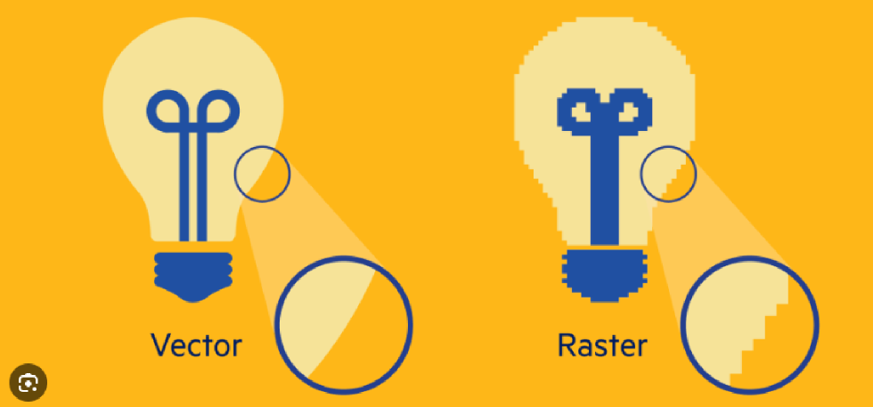

Canvas je HTML5 element koji, pomoću JavaScript-a, omogućava
dinamičko iscrtavanje različitih oblika, dodavanje slika, kreiranje
animacija na web stranici i sl.
Na platnu (canvas-u) to ne radimo korištenjem novog jezika (kao što je to
slučaj kod SVG) ili korištenjem Flasha. Najčešće uporabe platna su:
SVG (Scaleble Vector Graphics) grafika ne gubi
kvalitetu prilikom zumiranja ili resize-a.
Svi crteži mogu biti interaktivni i dinamički. Svaki element i
atribut SVG datoteke može biti animiran. Animacije mogu biti definirane i
pokrenute interaktivno ili pomoću skripti.
SVG integrira druge W3C standarde kao što su DOM, XSL …
| SVG | HTML Canvas |
|---|---|
| SVG ima bolju skalabilnost, tako da može imati bolje slike sa velikom kvalitetom na bilo kojoj rezoluciji | Canvas ima lošu skalabilnos. Nije prikladan za rad s velikim rezolucijama |
| SVG daje bolje performanse sa manjim brojem objekata ili većom površinom | Canvas daje bolje performanse za rad sa manjim površinama ili većim brojem objekata |
| SVG se može modificirati uz pomoć skripte i CSS-a | Canvas se može modificirati samo uz pomoć skripte |
| SVG je baziran na vektorima i sastavljen je od oblika | Canvas je baziran na pikselima |
| Ime | Marko |
|---|---|
| Telefon |
555-1234 555-8745 |
